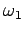
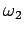
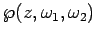
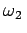
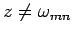
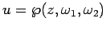
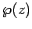
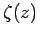

Von WEIERSTRASS sind die Funktionen
eingeführt worden, wobei  und  zwei beliebige komplexe Zahlen darstellen, deren Quotient nicht reell ist. Man setzt
wobei m und n beliebige ganze Zahlen sind, und definiert
Dabei deutet der Strich am Summenzeichen an, daß das Wertepaar m=n=0 ausgenommen ist. Die Funktion  hat folgende Eigenschaften:
-
Sie ist eine elliptische Funktion mit den Perioden und .
-
Die Reihe (
14.115b) konvergiert für alle
.
-
Die Funktion
genügt der Differentialgleichung
mit
Die Größen g2 und g3 werden als Invarianten von bezeichnet.
-
Die Funktion
 ist die Umkehrfunktion zu dem Integral
-
Die WEIERSTRASSschen Funktionen
sind nicht doppelperiodisch, also keine elliptischen Funktionen.
Es gelten folgende Beziehungen:
-
-
-
-
-
Jede elliptische Funktion ist eine rationale Funktion der WEIERSTRASSschen Funktionen  und .